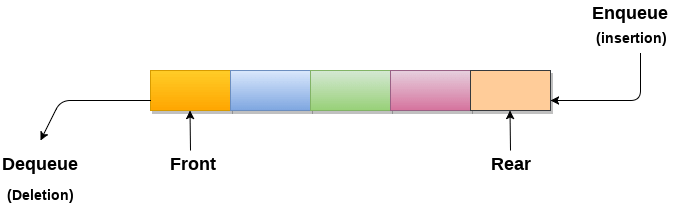

A Queue is defined as a linear data structure that is open at both ends and the operations are performed in First In First Out (FIFO) order.
We define a queue to be a list in which all additions to the list are made at one end, and all deletions from the list are made at the other end. The element which is first pushed into the order, the operation is first performed on that.
Like stacks, Queues can also be represented in an array: In this representation, the Queue is implemented using the array. Variables used in this case are
Queue operations work as follows: